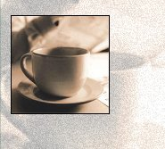
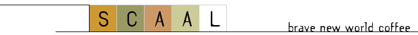

to the Scaal Coffee Web site, home of the finest coffee gifts in the world.
Take a moment to view our many products. We offer fine roasted products as well as items to wear and items for the office.
Scaal has been serving fine coffee connoisseurs like you for over 50 years. We follow a roasting process that produces the finest coffees in the world.
Check with us often to see our special promotions of the week.
What is the one philosophy that drives SCAAL? We believe that no matter where you go, you should always be able to enjoy the simple pleasure of a good cup of coffee in a comfortable environment. At home, reading the morning paper. At your local SCAAL, conversing with a confidant. Or perhaps in some foreign land, SCAAL will be greeting you like an old friend. After all, coffee is a ritual that transcends all cultural boundaries. It makes us feel alert, energetic and alive.
Anders has passed down the knowledge he learned as an apprentice in the coffee fields to every buyer, roaster, and franchise owner. SCAAL's standards for coffee are never compromised. We only select SHB – strictly hard bean or strictly high grown – coffee beans. To ensure their flavorful oils are preserved, extraordinary steps are taken to protect the coffee bean from heat, light, air and moisture.
All these efforts are made so that we may offer you a perfect cup of coffee.
There are so many places you could go to buy coffee. We've gone to extraordinary efforts to ensure that SCAAL is your best choice. The quality begins at harvest.
SCAAL relies on selective picking, a labor-intensive process that involves making several passes among the trees for those cherries that are perfectly ripe. Then we select top grade SHB, which stands for strictly hard bean or strictly high grown.
Beans that are grown at a minimum altitude of 4,000 feet above sea level for optimum flavor. Within hours of shipping our coffee to you, the beans are roasted on-site in small batches by a Certified Roastmaster and vacuum-packed to retain its fresh taste and rich aroma.